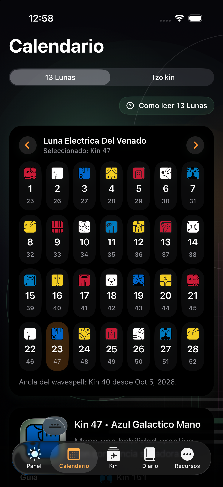
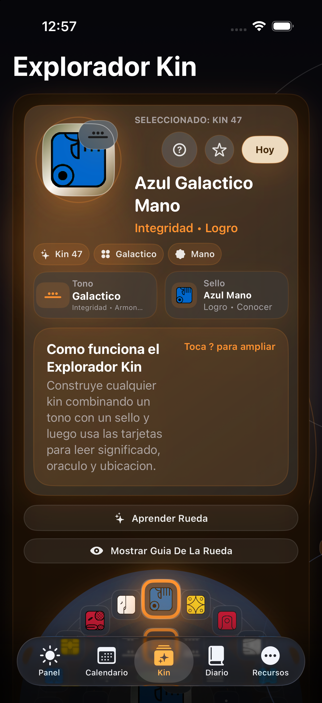
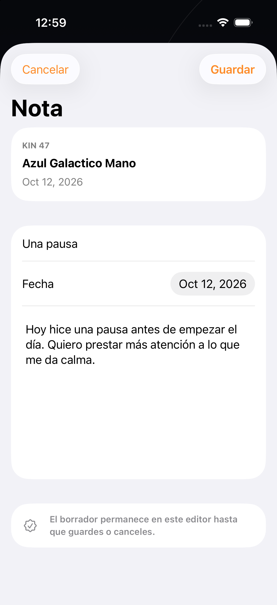

PASO 1 · Calendario
Consulta una fecha
Abre Calendario y elige una fecha. Revisa su kin y su posición en el ciclo de 13 Lunas.

Dreamspell en español
Una práctica sencilla con herramientas de calendario sin conexión y un diario local privado.
Vista previa del simulador de una compilación local 1.6.4 preparada para esta demostración. No es una captura de la versión descargada del App Store. El texto ficticio del diario se ha precargado en un borrador; no demuestra que se haya guardado una entrada.
PASO 1 · Calendario
Abre Calendario y elige una fecha. Revisa su kin y su posición en el ciclo de 13 Lunas.

PASO 2 · Explorador de kin
En la pestaña Kin, combina un tono galáctico y un sello solar. Lee la firma y sus relaciones.

PASO 3 · Diario
En Diario, crea una entrada con título y texto, revisa la fecha y pulsa Guardar. Tus notas se guardan localmente en tu dispositivo.

Ejemplo ficticio para el diario: «Hoy hice una pausa antes de empezar el día. Quiero prestar más atención a lo que me da calma.»
Dreamspell para iPhone y iPad · Inglés y español · US $4.99 como pago inicial en el App Store de Estados Unidos. Requiere iOS 26.0 o iPadOS 26.0 o posterior. El precio puede variar según el país.
Ver Dreamspell en el App StoreDatos de la ficha de Apple comprobados el 12 de octubre de 2026.
Dreamspell es un sistema espiritual moderno. No es lo mismo que los calendarios mayas tradicionales.